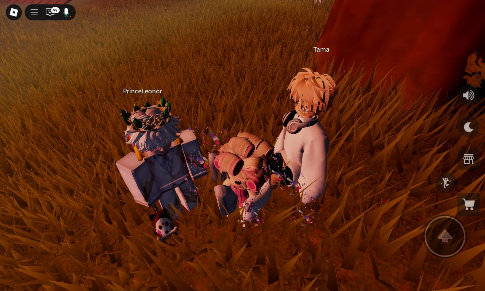
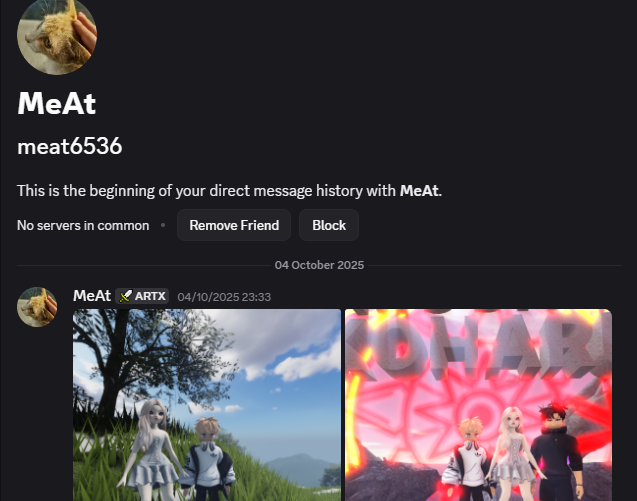
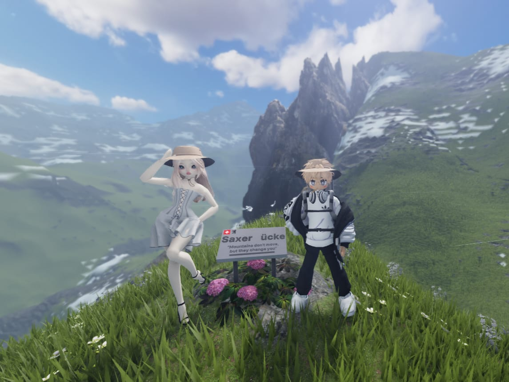
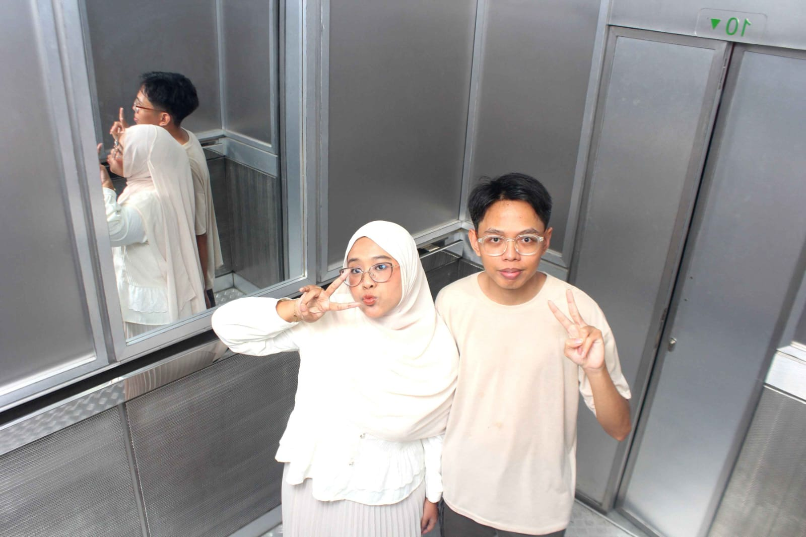
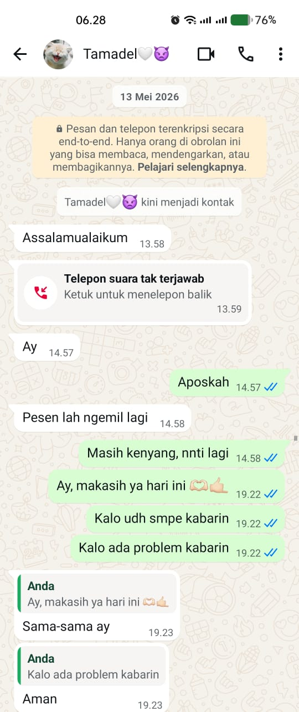

Happy Birthday 🤍
I made something for you.
Because some stories are too special to be told only once.

Setiap cerita punya awalnya masing-masing.
Dan cerita ini dimulai dari sebuah map hutan obrolan di Roblox. Saat itu kita hanyalah dua orang asing yang kebetulan berada di tempat yang sama.
Tidak ada yang istimewa.
Tidak ada yang direncanakan.
Hanya sebuah percakapan sederhana yang terus berlanjut sampai malam berubah menjadi pagi. Dan mungkin, justru itulah bagian paling ajaibnya. Karena dari sebuah pertemuan yang begitu sederhana, akhirnya lahir begitu banyak cerita yang tidak pernah kita bayangkan sebelumnya.

Dari sini lah ternyata yang bertambah bukan hanya jumlah pesan yang dikirim, melainkan juga alasan untuk menunggu pesan berikutnya datang.
Incoming Discord Call...
Ada banyak map yang pernah kita kunjungi. Banyak tempat yang pernah kita datangi Namun jika dipikir-pikir kembali, yang paling aku ingat bukanlah mapnya. Melainkan percakapan, tawa, dan waktu yang kita habiskan bersama didalamnya. Karena terkadang, sebuah tempat menjadi stimewa bukan karenna tempat itu sendiri, melainkan karena siapa yang menemani kita di sana.

Map Memory 1 / 6
⚠️ Major Story Event
Jarak Bengkulu-Jakarta bukanlah jarak yang dekat. Namun ternyata, jarak tidak pernah menjadi penghalang bagi dua orang yang memang ingin saling menemukan.
Setelah sekian lama hanya bertemu lewat layar, akhirnya kita berdiri di tempat yang sama, berjalan berdampingan, dan mengubah percakapan-percakapan sederhana menjadi kenangan yang bisa benar-benar dirasakan.
Seolah semesta sedang membuktikan bahwa beberapa pertemuan memang layak diperjuangkan.

Real Life Memory 1 / 7

Lucunya, setelah semua yang sudah terjadi, kita bahkan belum bertukar WhatsApp. Padahal kita sudah menghabiskan banyak waktu bersama, berbagi ceita, dan menciptakan begitu banyak kenangan.
Sampai pada akhirnya, di tengah perjalanan itu, WhatsApp hanyalah sebuah langkah kecil yang menyusul cerita yang sudah berjalan jauh lebih dulu.
🎉 Happy Birthday Pratama 🎉
Terima kasih untuk semua cerita yang sudah kita lalui.
Dan semoga, masih ada banyak cerita lain yang menunggu di depan.
For being part of my story.
And this story continues...